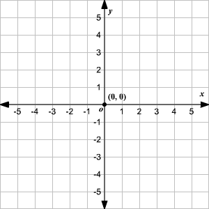

Lines, Slopes and Intercepts - Refresher¶
By Peter Rush
What is a slope?¶
The graph below shows the \(x\) axis, the \(y\) axis and the origin. Any point on the graph can be specified by an \(x\) coordinate and a \(y\) coordinate. For instance, the origin is the point where x = 0 and y = 0.
Note: theoretically these axes (and all the lines we will plot on them) run infinitely in the directions they travel in. However, as your screen isn’t infinite, they are truncated for the purpose of display.
# do not worry about any of the code in this notebook, it is just here to generate the graphs
import numpy as np
import matplotlib.pyplot as plt
import scipy.stats
import pandas as pd
from refresher_plots import axes_func, interactive_plot
# Make plots look a little bit more fancy
plt.style.use('fivethirtyeight')
# create a plot
axes_func(8,8,-10,11);
You may be more familiar with seeing the numbers appear on the axes, as in this picture:

(Image from https://www.varsitytutors.com/hotmath/hotmath_help/topics/graphing-scale-and-origin)
The graphs we will plot in this notebook display the numbers on the side of the figure, rather than on the axes themselves. This shows the same information, just in a different way.
These axes provide us a way of visualising the relationship between two sets of data. Why is this important?:
’The dominant task of the human cortex is to extract visual information from the activity patterns on the retina. Our visual system is therefore exceedingly good at detecting patterns in visualized data sets. As a result, one can almost always see what is happening before it can be demonstrated through a quantitative analysis of the data. Visual data displays are also helpful at finding extreme data values, which are often caused by […] mistakes in the data acquisition.’
(page 51, Haslwanter, 2016, An Introduction to Statistics with Python)
Let’s plot the point (x = 5, y = 5); it is shown as a red ‘x’ on the graph below:
# do not worry about any of the code in this notebook, it is just here to generate the graphs
axes_func(8,8,-10,11)
plt.plot(5,5, 'X', color = 'darkred', markersize = 12, label = '(x = 5, y = 5)')
plt.legend();
In a sense, the simplest line we can draw is one where, for any point on the line, the x and y coordinate are the same number.
So when x = 0 then y = 0,
when x = 1 then y = 1,
when x = 5 then y = 5,
when x = 10 then y = 10 and so on.
The equation for this line is y = x, and this line is shown in red below.
# do not worry about any of the code in this notebook, it is just here to generate the graphs
x = np.arange(-10, 11)
y = x
axes_func(8,8,-10,11)
plt.plot(x,y, color = 'red', label = 'y = x')
plt.plot(5,5, 'X', color = 'darkred', markersize = 12, label = '(x = 5, y = 5)')
plt.legend();
You’ll notice that the point (x = 5, y = 5) is on this line. A line can be thought of as a collection of infinitely close points. The equation for a line tells you which points are on the line. We can refer to the entire line on the graph above as y = x.
If we know the equation for the line, we can work out which points are on the line by taking any value of x and, using the equation, work out the y coordinate for that value of x. The point (x = 5, y = 5) is on the line y = x because the value of x and y are the same at (x = 5, y = 5).
The table below shows the x and y coordinates for some of the points on the line y = x. As you can see, whatever x equals, y equals the same number.
df = pd.DataFrame({'x coordinate:': x, 'y coordinate:': y})
df.index = np.repeat('', len(df))
display(df)
| x coordinate: | y coordinate: | |
|---|---|---|
| -10 | -10 | |
| -9 | -9 | |
| -8 | -8 | |
| -7 | -7 | |
| -6 | -6 | |
| -5 | -5 | |
| -4 | -4 | |
| -3 | -3 | |
| -2 | -2 | |
| -1 | -1 | |
| 0 | 0 | |
| 1 | 1 | |
| 2 | 2 | |
| 3 | 3 | |
| 4 | 4 | |
| 5 | 5 | |
| 6 | 6 | |
| 7 | 7 | |
| 8 | 8 | |
| 9 | 9 | |
| 10 | 10 |
Another way to write y = x is y = 1 * x, as anything multiplied by 1 equals itself.
What happens if we change that ‘1’ in y = 1 * x to another number? Let’s change that number from ‘1’ to ‘5’. The graph below shows, in blue, the line for the equation y = 5 * x. Our original line y = 1 * x is also shown, in red.
# do not worry about any of the code in this notebook, it is just here to generate the graphs
y1 = 5*x
axes_func(8,8,-10,11)
plt.plot(x,y, color = 'red', label = 'y = 1 * x')
plt.plot(x,y1, color = 'blue', label = 'y = 5 * x')
plt.legend();
The number we have changed - from ‘1’ to ‘5’ - is the slope . Graphically, we can see that changing the slope changes the steepness of the line: the line for y = 5 * x is much steeper than the line for y = 1 * x.
What the slope tells us is this: for the x-coordinate of any point on the line, how much bigger/smaller is the y coordinate?
In the case of y = 1 * x:
where x = 1, y equals 1 times the value of x … so y = 1,
where x = 5, y equals 1 times the value of x … so y = 5 etc.
In the case of y = 5 * x, y equals 5 times the value of x. So:
where x = 1, y equals 5 times the value of x … so y = 5,
where x = 5, y equals 5 times the value of x… so y = 25 etc.
The table below shows this for a set of points on the line y = 5 * x:
df = pd.DataFrame({'x coordinate:': x, 'y coordinate:': y1})
df.index = np.repeat('', len(df))
display(df)
| x coordinate: | y coordinate: | |
|---|---|---|
| -10 | -50 | |
| -9 | -45 | |
| -8 | -40 | |
| -7 | -35 | |
| -6 | -30 | |
| -5 | -25 | |
| -4 | -20 | |
| -3 | -15 | |
| -2 | -10 | |
| -1 | -5 | |
| 0 | 0 | |
| 1 | 5 | |
| 2 | 10 | |
| 3 | 15 | |
| 4 | 20 | |
| 5 | 25 | |
| 6 | 30 | |
| 7 | 35 | |
| 8 | 40 | |
| 9 | 45 | |
| 10 | 50 |
Another way of thinking of this is: if we take any two points on the line, and we calculate how much the x-value has changed between those points, then the slope tells us how much the y value has also changed.
So for the line y = 1 * x, if we follow the line from x = 0 to x = 5, the slope tells us how much the y values have changed over this distance. One way of thinking of this is that the slope is the ‘rise’ (the change in y values along the line) dividied by the ‘run’ (the change in the x values along the line):
The graph below shows that, for the line y = 1 * x, as x changes from 0 to 5, y also changes from 0 to 5.
(This graph shows slightly more of the x and y axes than the previous graphs, as we will need this for the line we plot after this one).
# do not worry about any of the code in this notebook, it is just here to generate the graphs
axes_func(8,8,-30,31, five_ticks = True)
x_long = np.arange(-30,31)
y = 1 * x_long
plt.plot(x_long, y, color = 'red', label = 'y = 1 * x')
plt.plot([5, 0, 5], [5,5, 0], 'x', color = 'black')
zer_5 = np.arange(0,6)
plt.plot(np.repeat(5, len(zer_5)), zer_5, '--', color = 'darkgreen', label = 'Change in y')
plt.plot(zer_5, np.repeat(5, len(zer_5)),'--', color = 'cyan', label = 'Change in x')
plt.legend();
The graph below shows the same change in x (from 0 to 5) for the line y = 5 * x.
# do not worry about any of the code in this notebook, it is just here to generate the graphs
axes_func(8,8,-30,31, five_ticks = True)
plt.plot([5, 0, 5], [25,25, 0], 'x', color = 'black')
plt.plot(x_long,y, color = 'red', label = 'y = 1 * x')
plt.plot(x,y1, color = 'blue', label = 'y = 5 * x')
zer_25 = np.arange(0,26)
plt.plot(np.repeat(5, len(zer_25)), zer_25, '--', color = 'darkgreen', label = 'Change in y')
plt.plot(zer_5, np.repeat(25, len(zer_5)),'--', color = 'cyan', label = 'Change in x')
plt.legend();
If you compare the two graphs, you can see that, relative to the line y = 1 * x, on the line y = 5 * x the value of y has changed a lot more for the same 5 point increase in x. It has changed by 5 times the amount. This may be clearer in the graph below:
# do not worry about any of the code in this notebook, it is just here to generate the graphs
axes_func(8,8,-30,31, five_ticks = True)
plt.plot(x_long,y, color = 'red', label = 'y = 1 * x')
plt.plot(x,y1, color = 'blue', label = 'y = 5 * x')
plt.plot([5, 0, 5], [25,25, 0], 'x', color = 'black')
plt.plot([5, 0, 5], [5,5, 0], 'x', color = 'black')
zer_25 = np.arange(0,26)
plt.plot(np.repeat(5, len(zer_25)), zer_25, '--', color = 'darkgreen', label = 'Change in y')
plt.plot(zer_5, np.repeat(25, len(zer_5)),'--', color = 'cyan', label = 'Change in x')
plt.plot(np.repeat(5, len(zer_5)), zer_5, '--', color = 'darkgreen')
plt.plot(zer_5, np.repeat(5, len(zer_5)),'--', color = 'cyan')
plt.legend();
The change in x is the same for each line, but the change in y is much larger for the line with the larger slope, y = 5 * x.
The larger the slope, the larger the change in y for a change in x. In this case, for the line y = 5 * x, as the line moves 5 points along the x axis, it moves 5 times that amount (25 points) along the y axis.
Conversely, for the line y = 1 * x, as the line moves 5 points along the x axis, it only moves 5 points along the y axis.
What would the graph look like if we change the slope of the line to 10, instead of 1? This new line, y = 10 * x, is shown below, in green.
# do not worry about any of the code in this notebook, it is just here to generate the graphs
y2 = 10*x
axes_func(8,8,-30,31, five_ticks = True)
plt.plot(x_long,y, color = 'red', label = 'y = 1 * x')
plt.plot(x,y1, color = 'blue', label = 'y = 5 * x')
plt.plot(x,y2, color = 'green', label = 'y = 10 * x')
plt.legend();
As you can see, the take-home message is that if we increase the slope, the line gets steeper.
For lines with positive slopes, when the values of x are negative, the values of y are also negative. And when the values of x are positive, the values of y are also positive. Look at the graph above to confirm this is correct.
But what about if we make the slope negative?
Let’s try making the slope -5. The line for y = -5 * x is shown below, as a dashed line in dark blue. For comparison, the line y = 5 * x is also shown, as a solid line in lighter blue.
# do not worry about any of the code in this notebook, it is just here to generate the graphs
y3 = -5 * x
axes_func(8,8,-10,11)
plt.plot(x,y1, color = 'blue', label = 'y = 5 * x')
plt.plot(x, y3, '--', color = 'darkblue', label = 'y = -5 * x')
plt.legend();
As you can see, the lines are equally steep. However, for the line with the negative slope, when the x values are negative, the y values are positive. And when the x values are positive, the y values are negative.
So changing the sign of the slope (from positive 5 to negative 5) has reversed the direction the line travels in. But the steepness of the line is the same.
The graph below shows multiple lines, so that you can see the relationship between the size of the slope (large or small), and the sign of the slope (positive or negative - lines with negative slopes are shown as dashed lines).
# do not worry about any of the code in this notebook, it is just here to generate the graphs
y4 = -x_long
y6 = -10 *x
axes_func(8,8,-10,11)
plt.plot(x_long,y, color = 'red', label = 'y = 1 * x')
plt.plot(x,y2, color = 'green', label = 'y = 10 * x')
plt.plot(x_long,y4, '--', color = 'darkred', label = 'y = -1 * x')
plt.plot(x, y6,'--', color = 'darkgreen', label = 'y = -10 * x')
plt.legend();
What is an intercept?¶
Look at the graph above. Despite having different sizes of slope, with different signs, all of the lines pass through the origin at (x = 0, y = 0).
The intercept is the term for where a line crosses the y axis. The intercept for all the lines in the above graph is 0, as they all cross the y axis where y = 0.
We can change the intercept of a line by adding or subtracting a quantity in the equation for the line. This has the effect of adding or subtracting that quantity from every point on the line. This is easier to illustrate graphically.
The graph below shows two lines. One we have seen before, y = 1 * x (shown in blue), and a new line y = 1 * x + 5 (shown in gold).
# do not worry about any of the code in this notebook, it is just here to generate the graphs
y1 = x_long
y2 = x_long + 5
axes_func(8,8,-10, 11)
plt.plot(x_long,y1, color = 'blue', label = 'y = 1 * x')
plt.plot(x_long,y2, color = 'gold', label = 'y = 1 * x + 5')
plt.legend();
We can see that the new line, y = 1 * x + 5, crosses the y axis at 5, but the steepness of the line is the same as y = 1 * x - it is only the point that each line crosses the y axis that is different.
For any value of x on the line y = 1 * x + 5, the y value equals 1 times the x value, plus the intercept, which in this case is 5.
So if x = 0, y equals 1 times the value of x, plus the intercept: so y = 0 + 5 = 5.
If x = 2, y equals 1 times the value of x, plus the intercept: so y = 2 + 5 = 7 etc.
That’s all there is to it. Adding or subtracting an intercept from a line simply moves the line up and down the y axis. If the rest of the equation is the same, that is all that changes. This is true regardless of what the slope is:
# do not worry about any of the code in this notebook, it is just here to generate the graphs
y1 = 10 * x
y2 = 10 * x + 5
axes_func(8,8,-10, 11, double_y = True, five_ticks_y = True)
plt.plot(x,y1, color = 'blue', label = 'y = 10 * x')
plt.plot(x,y2, color = 'gold', label = 'y = 10 * x + 5')
plt.legend();
Let’s see what happens if we set the intercept to -5, rather than postive 5:
# do not worry about any of the code in this notebook, it is just here to generate the graphs
y1 = 5 * x
y2 = 5 * x + 5
y3 = 5 * x - 5
axes_func(8,8,-10, 11, double_y = True, five_ticks_y = True)
plt.plot(x,y1, color = 'orange', label = 'y = 5 * x')
plt.plot(x,y2, color = 'crimson', label = 'y = 5 * x + 5')
plt.plot(x,y3, color = 'darkred', label = 'y = 5 * x - 5')
plt.legend();
You can see that a negative intercept moves the line downwards away from the origin.
A positive intercept moves the line upwards away from the origin.
This is also true if the slope is negative, as can be seen from the graph below:
# do not worry about any of the code in this notebook, it is just here to generate the graphs
y1 = -5 * x
y2 = -5 * x + 5
y3= -5 * x - 5
axes_func(8,8,-10, 11, double_y = True, five_ticks_y = True)
plt.plot(x,y1,'--', color = 'darkblue', label = 'y = -5 * x')
plt.plot(x,y2,'--', color = 'silver', label = 'y = -5 * x + 5')
plt.plot(x,y3, '--',color = 'darkred', label = 'y = -5 * x - 5')
plt.legend();
In summary: the slope determines the steepness of the line. The intercept moves the line up and down the y axis, relative to the origin.¶
Why do we care?¶
We should care about the equations for lines, because fitting a line to a set of datapoints can be used for description and prediction. ‘Fitting’ in this sense means finding the values of the equation for a line which best captures the pattern in our data.
The dataframe below shows some data from the students ratings dataset:
ratings = pd.read_csv('student_ratings.csv')
ratings = ratings[['Discipline', 'Clarity', 'Overall Quality']]
ratings.head(10)
| Discipline | Clarity | Overall Quality | |
|---|---|---|---|
| 0 | English | 3.756147 | 3.791364 |
| 1 | Mathematics | 3.487379 | 3.566867 |
| 2 | Biology | 3.608331 | 3.657641 |
| 3 | Psychology | 3.909520 | 3.900949 |
| 4 | History | 3.788818 | 3.773746 |
| 5 | Chemistry | 3.387174 | 3.465485 |
| 6 | Communications | 3.867349 | 3.875019 |
| 7 | Business | 3.640327 | 3.663332 |
| 8 | Political Science | 3.759018 | 3.756197 |
| 9 | Economics | 3.382735 | 3.435038 |
The scatterplot below shows the Clarity ratings and the Overall Quality ratings for each course (the course names are shown in the Discipline column of the dataframe above).
Each point on the graph shows both ratings for one course. The x-coordinate of the point shows that course’s Clarity rating, and the y-coordinate shows the Overall Quality rating:
# do not worry about any of the code in this notebook, it is just here to generate the graphs
clarity = ratings['Clarity'].copy()
quality = ratings['Overall Quality'].copy()
plt.figure(figsize = (8,8))
plt.scatter(clarity, quality, label = 'Clarity (x) and Overall Quality (y) ratings')
plt.xlabel('Calrity Rating')
plt.ylabel('Overall Quality Rating')
plt.legend();
We can fit a line to this data by using mathematical or computational techniques which find the equation for the line which best captures the trend in the datapoints (this is done by finding a line which minimizes the vertical distance between the darapoints and the line - we will go into more detail on these techniques elsewhere).
Fitting a line can help us describe the strength and direction of the relationship between Clarity and Overall Quality:
# do not worry about any of the code in this notebook, it is just here to generate the graphs
lin_reg = scipy.stats.linregress(clarity, quality)
slope = lin_reg[0]
intercept = lin_reg[1]
ols_line = intercept + slope * clarity
plt.figure(figsize = (8,8))
plt.xlabel('Clarity Rating')
plt.ylabel('Overall Quality Rating')
plt.scatter(clarity, quality, label = 'Clarity (x) and Overall Quality (y) ratings')
plt.plot(clarity, ols_line, color = 'darkred', label = 'Best-fitting straight line: y = '+str(np.round(slope,2))+' * x + '+str(np.round(intercept, 2)))
plt.legend();
The equation for the best-fitting straight line is:
(Remember that in this case “x” is the Clarity rating!)
0.92 is the slope.
0.32 is the intercept.
The steeper the slope of the best fitting line, the stronger the relationship between the two variables. The intercept is important too, we will explain why shortly.
Once we have fitted a line, we can use it to predict things.
Let’s say a new course is piloted at a university. Let’s say we have data on it’s Clarity ratings, but have not yet collected data on its Overall Quality.
We could use the Clarity score to predict the Overall Quality rating for that course, based on the relationship between Clarity and Overall Quality in the ratings data we already have.
Let’s say the Clarity rating of the new course is 3.6. The graph below shows how we would use this Clarity score to predict the Overall Quality score that the course would get. We would generate this prediction by checking what the y coordinate is for the point on the line where x = 3.6:
# do not worry about any of the code in this notebook, it is just here to generate the graphs
predict = intercept + slope * 3.6
plt.figure(figsize = (8,8))
plt.xlabel('Clarity Rating')
plt.ylabel('Overall Quality Rating')
plt.scatter(clarity, quality, label = 'Clarity (x) and Overall Quality (y) ratings')
plt.plot(clarity, ols_line, color = 'darkred', label = 'Best-fitting straight line: y = '+str(np.round(slope,2))+' * x + '+str(np.round(intercept, 2)))
plt.plot(3.6, predict, 'X', markersize = 15, color = 'red', label = 'Predicted "Overall Quality" rating for "Clarity == 3.6"' )
plt.legend(bbox_to_anchor = (1,1));
In this example, the predicted Overall Quality rating for Clarity rating of 3.6 is 3.635, as this is the y-coordinate for the point on the line where x = 3.6.
Look at the y-axis level with the red “x” to see that this is correct.
Remember that all lines pass through the origin if they do not have a nonzero intercept (i.e. an intercept that is any other number apart from 0, in the case of the scatterplot above the intercept is 0.32).
So, we need a nonzero intercept - that is, we need to add or subtract a quantity from every value on the line - if the line which best fits the data does not pass through the origin.
In our current example, without the nonzero intercept, our line would not pass through the data.
With an intercept of 0, the line would have the correct slope, but it would be too low down the y axis to make useful predictions.
The graph below shows a green line which has the same slope as the best fitting line, but has an intercept of 0. You can see that it does not fit the data well at all. If we use that line to make predictions, they would be very inaccurate.
bad_line = slope*clarity
bad_predict = 3.6 * slope
plt.figure(figsize = (8,8))
plt.xlabel('Clarity Rating')
plt.ylabel('Overall Quality Rating')
plt.scatter(clarity, quality, label = 'Clarity (x) and Overall Quality (y) ratings')
plt.plot(clarity, ols_line, color = 'darkred', label = 'Best-fitting straight line: y = '+str(np.round(slope,2))+' * x + '+str(np.round(intercept, 2)))
plt.plot(clarity, bad_line, color = 'green', label = 'Line with the correct slope, but a 0 intercept: y = '+str(np.round(slope,2))+' * x + 0')
plt.plot(3.6, predict, 'X', markersize = 15, color = 'red', label = 'Predicted "Overall Quality" rating for "Clarity == 3.6"' )
plt.plot(3.6, bad_predict, 'X', markersize = 15, color = 'red', )
plt.legend(bbox_to_anchor = (1,1));
Let’s plot the Clarity ratings, the Overall Quality ratings, the best-fitting line, and the line with the incorrect intercept on a graph which also shows the origin, to see more clearly how they relate to the lines we plotted earlier:
# do not worry about any of the code in this notebook, it is just here to generate the graphs
x_points = np.linspace(-5, 5)
good_line = intercept + slope * x_points
bad_line = slope * x_points
axes_func(10,10, -4.5, 5)
plt.xlabel('Clarity Rating')
plt.ylabel('Overall Quality Rating')
plt.scatter(clarity, quality, label = 'Clarity (x) and Overall Quality (y) ratings')
plt.plot(x_points, good_line, color = 'darkred', label = 'Best-fitting straight line: y = '+str(np.round(slope,2))+' * x + '+str(np.round(intercept, 2)))
plt.plot(x_points, bad_line, color = 'green', label = 'Line with the correct slope, but a 0 intercept: y = '+str(np.round(slope,2))+' * x + 0')
plt.legend(bbox_to_anchor = (1.03,1));
You can see that the line with the (incorrect) 0 intercept passes through the origin, and is too low down the y axis to pass through any of the datapoints (shown in blue).
The best fitting line does not pass through the origin; it crosses the y axis at y = 0.32. As a result, it captures the pattern in the datapoints much better, and therefore is more useful for making predictions based on the pattern in the data.
Try it yourself¶
If you are using an interactive version of this notebook, try changing the values of the slope and intercept in the cell below, and then running the cell, to plot your own lines:
# change the values of the slope and intercept below
slope = 1
intercept = 0
# do not alter the code below this point
interactive_plot(intercept, slope)